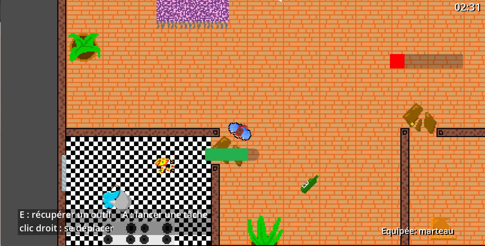
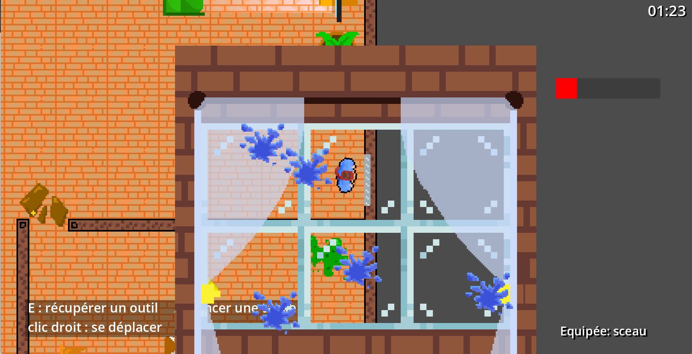
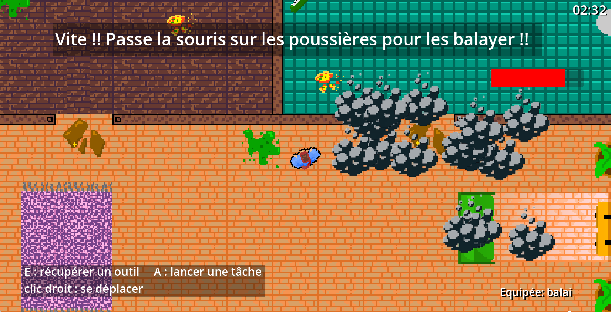

Le principe du concours Code Game Jam est de créer un jeu vidéo dans un temps imparti, tout en respectant un thème imposé pour l'édition.
Les participants disposent de 30 heures pour développer un petit jeu vidéo pour lequel ils ont carte blanche, tant d'un point de vue technique (langages de programmation, logiciels, format du jeu) que graphique (moteur de jeu, boîtes à outils). Créativité, collaboration et fun sont les maîtres mots de ce concours !
J'ai participé à la Code Game Jam pour la première fois cette année, en 2026, avec un groupe de 5 amis. Sur le thème "Fête des clics", nous avons imaginé, conceptualisé et implémenté un jeu vidéo entièrement fonctionnel en seulement 30 heures.
Le personnage jouable a organisé une grande fête dans sa maison avec l'accord de ses parents, à une seule condition : ne faire aucun dégât. Malheureusement, à son réveil, il regarde l'heure et s'aperçoit que ses parents rentrent dans quelques minutes... et que la maison est sens dessus dessous !
L'objectif : Nettoyer entièrement la maison avant que les parents ne passent la porte et ne découvrent ce désastre.
Pour accomplir sa mission, le joueur dispose de 3 outils spécifiques pour des tâches bien précises, ainsi que d'un élément à double tranchant :
Voici un aperçu du joueur utilisant les trois objets disponible sur le jeu : Le Marteau, Le Seau et Le Balai.



Nous avons choisi de développer ce jeu sur le moteur Godot, que nous n'avions pourtant jamais utilisé auparavant. Nous avons également mis en place Git pour faciliter le travail en équipe et fluidifier la gestion des versions de notre code.
Une de nos plus grandes fiertés sur ce projet est que tout ce que vous voyez à l'écran a été fait à la main par notre équipe : qu'il s'agisse des décors, du design du personnage, ou des assets liés aux mécaniques de jeu.
À l'issue des 30 heures d'efforts intenses, notre travail a porté ses fruits : notre groupe a terminé à la 1ère place parmi tous les participants de notre IUT ! Au niveau global, nous nous sommes hissés à la 13ème place mondiale sur les 90 équipes inscrites cette année.
Tester notre jeu de la Code Game Jam
Jouer au jeu